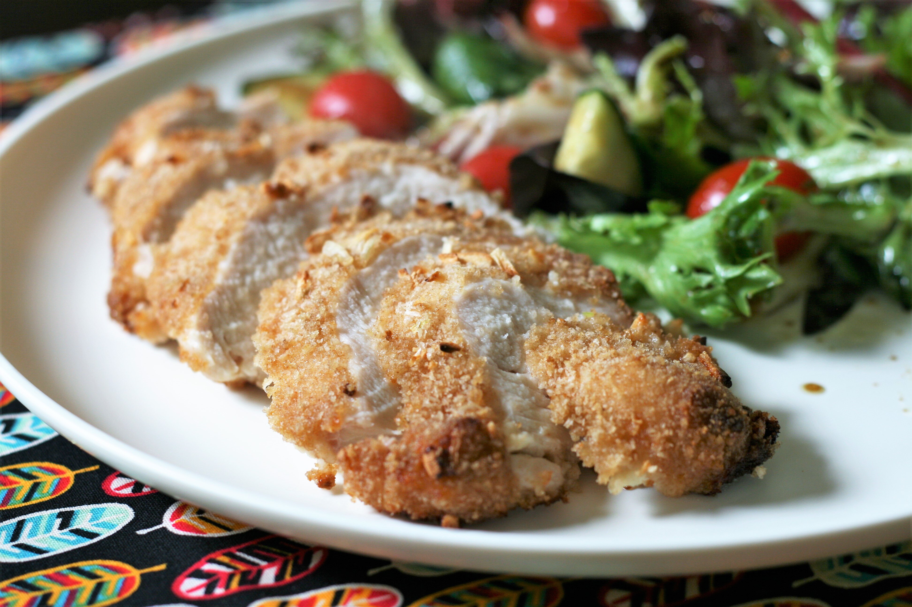

French Onion chicken

Description
French Onion-Breaded Baked Chicken is one of the best chicken dishes you will ever taste.
The ingredients and recipes for this dish can be found below.
Ingredients
for 4 servings
- 1 cups bread crumbs
- 1 (1 ounce) package dry French onion soup mix
- ¼ cup and 1 tablespoon and 1 teaspoons mayonnaise
- 1 tablespoon garlic paste
- 4 skinless, boneless chicken breasts
Steps
- Preheat the oven to 425 degrees F (220 degrees C).
- Mix bread crumbs and dry soup mix together in a bowl.
- Mix mayonnaise and garlic paste together in a separate bowl. Microwave on high to thin out consistency, 20 to 30 seconds.
- Brush chicken breasts with the mayonnaise mixture. Cover with the crumb mixture. Place on a baking sheet.
- Bake on the middle rack of the preheated oven until chicken is no longer pink in the center and juices run clear, about 20 minutes. An instant-read thermometer inserted into the center should read at least 165 degrees F (74 degrees C).